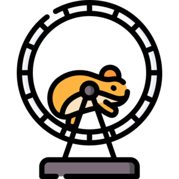

Let Your Hamster Power The Future
In a world where renewable energy is the future, we offer a delightfully unexpected solution—harnessing the boundless energy of hamsters to generate electricity! Our innovative kiosks feature small, eco-friendly generators powered by the natural running motion of hamsters on their wheels. Each generator captures and stores energy, providing a charming yet functional way to power small devices like LED lights, phone chargers, or decorative displays. Whether you’re an eco-conscious shopper, a pet lover, or simply someone who appreciates quirky innovation, our generators make sustainability both fun and practical.
We believe in combining creativity with clean energy solutions. Our kiosks not only sell these adorable power stations but also educate visitors on the potential of small-scale renewable energy. Each purchase comes with a hamster-approved exercise wheel, ensuring that your tiny energy provider stays happy and active while producing power. Ideal for classrooms, offices, or as a unique conversation piece, our generators showcase how even the smallest creatures can make a big impact on the world of sustainable energy. Stop by our kiosk and discover how a little hamster hustle can light up your life!